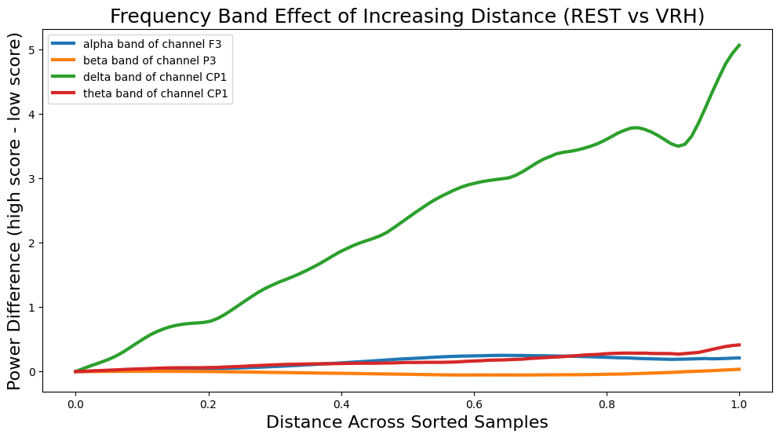

import torchimport torch.nn as nnimport torch.nn.functional as Ffrom torch.utils.data import TensorDataset, DataLoaderfrom fastai.basics import L, DataLoaders, Learner# from fastai.tabular.all import *import numpy as npimport mneimport zarrimport seaborn as snsimport matplotlib.pyplot as pltfrom model20 import stagerNetAAEfrom utils1 import LossAttrMetric, GetLatentSpace, norm_batch, UnfreezeFcCrit, \ SwitchAttribute, distrib_regul_regression, hist_lab, plot_resultsdevice = torch.device('cuda:1')torch.cuda.set_device(device)print('the current device is: ', device)# Define the channels to displaychan_select =slice(0,17,2)# Get channel namesfile_path ='/home/JennebauffeC/pytorchVAE/fastAI/Monitosed/Biowin/sub-001/VR_1_VRH.vhdr'monitosed_VR1 = mne.io.read_raw_brainvision(file_path, preload=True)montage = monitosed_VR1.get_montage()electrode_info = montage.get_positions()['ch_pos']chan_names =list(electrode_info.keys())sliced_chan = chan_names[chan_select]print('selected channels: ', sliced_chan)# Define frequency bandsfrequency_bands = {'alpha': (8, 13),'beta': (13, 24),'delta': (0.5, 4),'theta': (4, 8)}
[Errno 2] No such file or directory: 'fastAI/GitHub/'
/home/JennebauffeC/pytorchVAE/fastAI/GitHub
the current device is: cuda:1
Extracting parameters from /home/JennebauffeC/pytorchVAE/fastAI/Monitosed/Biowin/sub-001/VR_1_VRH.vhdr...
Setting channel info structure...
Reading 0 ... 924099 = 0.000 ... 924.099 secs...
['Fp1', 'F3', 'F9', 'FC1', 'T7', 'CP1', 'P3', 'P9', 'Oz']
# Sliding window functiondef sliding_window(data, window_size, step_size):print('in sliding windows, data shape: ', data.shape) num_windows = (data.shape[-1] - window_size) // step_size +1 windows = [data[:,:,i * step_size: i * step_size + window_size] for i inrange(num_windows)]return torch.stack(windows)# Compute power spectrum within each windowdef compute_power_spectrum(data, nfft=64):print('data shape: ', data.shape)return torch.fft.fft(data.to('cpu'), n=nfft, dim=-1).abs().to(device) **2# Compute band power within each windowdef compute_band_power(power_spectrum, frequency_bands, sampling_rate=50): band_power = {}for band_name, (low_freq, high_freq) in frequency_bands.items(): freq_indices = torch.where( (torch.fft.fftfreq(power_spectrum.shape[-1], d=1/ sampling_rate) >= low_freq) & (torch.fft.fftfreq(power_spectrum.shape[-1], d=1/ sampling_rate) <= high_freq) )[0] band_power[band_name] = power_spectrum[:, :, freq_indices].mean(dim=2)return band_power# Sliding window analysis and statistical computationdef analyze_power_evolution(t, sorted_idx, window_size, step_size): sliding_windows = sliding_window(t[sorted_idx], window_size, step_size) power_spectra = compute_power_spectrum(sliding_windows) band_power_over_time = {band: [] for band in frequency_bands}for power_spectrum in power_spectra: band_power = compute_band_power(power_spectrum, frequency_bands)for band in frequency_bands: band_power_over_time[band].append(band_power[band].mean(dim=0))for band in frequency_bands: band_power_over_time[band] = torch.stack(band_power_over_time[band])return band_power_over_time# Normalize EEG datadef normalize_eeg_data(x): eps =1e-08 mean = torch.nanmean(x, dim=2) std = torch.clamp_min(torch.std(x, dim=2), eps) x_norm = (x - mean.unsqueeze(-1)) / torch.clamp_min(std.unsqueeze(-1), eps)return torch.clamp(torch.clamp(x_norm, min=-3), max=3).float()# Plot band power over timedef plot_band_power_over_time(band_power_over_time, frequency_bands, channel_names, window_size, step_size): num_windows =len(band_power_over_time[list(frequency_bands.keys())[0]]) time_axis = torch.arange(0, num_windows * step_size, step_size) + window_size //2for band, powers in band_power_over_time.items(): plt.figure(figsize=(12, 6)) sns.heatmap(powers.T.cpu().numpy(), xticklabels=time_axis.cpu().numpy(), yticklabels=channel_names, cmap='viridis') plt.title(f'Power Evolution in {band.capitalize()} Band') plt.xlabel('Time (samples)') plt.ylabel('Channels') plt.show()
# Load required datatarget_pair ='REST0_VRH2'classif_filename ='monitosed_BIOWIN_aae_classif_REST_VRH_05_24_17h_latent64'# classif_filename = 'monitosed_BIOWIN_aae_classif_REST_HYP_03_26_19h'# classif_filename = 'monitosed_BIOWIN_aae_classif_HYP_VRH_03_26_19h'state_dict = torch.load(f'models/{classif_filename}.pth') # load the best weightsdata_dir =f'/databases/monitosed-LUCA/Preprocessed_Data/{target_pair}'zarr_dir =f'/home/JennebauffeC/pytorchVAE/fastAI/Monitosed/preprocessed_data/{target_pair}'x_zarr = zarr.load(f'{data_dir}/x.zarr')ica_zarr = zarr.open(f'{zarr_dir}/ica.zarr', mode='r')x = torch.tensor(ica_zarr, device=device).float()x_norm = normalize_eeg_data(x)t = normalize_eeg_data(torch.tensor(x_zarr, device=device).float())y = torch.load(f'{data_dir}/y.pt')y_tensor = torch.tensor([[0, 1] if lab ==0else [1, 0] for lab in y], device=device).float()n_train_samples =int(x.shape[0]//4*3) # training set = 75% of the datasetn_total_samples = x.shape[0]splits = (L(range(n_train_samples), use_list=True), L(np.arange(n_train_samples, n_total_samples), use_list=True))ds = TensorDataset(x_norm, y_tensor)train_ds = torch.utils.data.Subset(ds, splits[0])valid_ds = torch.utils.data.Subset(ds, splits[1])# Create DataLoadersdls = DataLoaders.from_dsets(train_ds, valid_ds, bs=128, num_workers=0)print('input device:', dls.train_ds[0][0].device)print('label device:', dls.train_ds[0][1].device)# Define modelmodel = stagerNetAAE(latent_dim=64, channels=x.shape[1], timestamps=x.shape[-1], dropout_rate=.3)# Extract the latent spacemodel.load_state_dict(state_dict, strict=False)model = model.to(device)# Get latent space and targetslearn = Learner(dls, model, loss_func=model.aae_loss_func_monitosed)learn.zi_valid = torch.tensor([]).to(device)learn.labels = torch.tensor([]).to(device)learn.get_preds(ds_idx=1,cbs=[GetLatentSpace(cycle_len=1)])z = learn.zi_validtarget = torch.tensor(learn.labels)learn.zi_valid = torch.tensor([]).to(device)learn.labels = torch.tensor([]).to(device)learn.get_preds(ds_idx=0,cbs=[GetLatentSpace(cycle_len=1)])z = torch.vstack((learn.zi_valid, z))target = torch.hstack((learn.labels, target))print('latent space shape: ', z.shape)
# Analyze power evolution using absolute differenceswindow_size =64# Example window sizestep_size =4# Example step sizeband_power_over_time = analyze_power_evolution(t[:,chan_select], sorted_idx, window_size, step_size)# Compute differences in power for each banddef compute_diffs(band_power_over_time, sorted_idx): bdiff = [] target_chan = [] distances = [torch.tensor(0)] band_idx =0for band in frequency_bands: tmp_diff = torch.zeros(band_power_over_time[band].shape[1]).to(device)for dist in np.arange(1, int(.9* band_power_over_time[band].shape[0])):if band_idx==0: distances.append(torch.tensor(dist)) bpow0 = band_power_over_time[band][:-dist] bpow1 = band_power_over_time[band][dist:] mean_diff = (bpow1 - bpow0).mean(dim=0) tmp_diff = torch.vstack((tmp_diff, mean_diff)) chan_idx = torch.argmax(tmp_diff.var(dim=0)) target_chan.append(sliced_chan[chan_idx]) bdiff.append(tmp_diff[:, chan_idx]) band_idx +=1return torch.stack(distances), torch.stack(bdiff).T, target_chandistances, bdiff, target_chan = compute_diffs(band_power_over_time, sorted_idx)# Plot resultsxax = distances/distances.max()legend_list = [f"{band} band of channel {ch}"for band, ch inzip(frequency_bands.keys(), target_chan)]plt.figure(figsize=(12, 6))for i, band_diff inenumerate(bdiff.T): plt.plot(xax.cpu().numpy(), band_diff.cpu().numpy(), linewidth=3, label=legend_list[i])plt.xlabel('Distance Across Sorted Samples', fontsize=16)plt.ylabel('Power Difference (high score - low score)', fontsize=16)plt.title('Frequency Band Effect of Increasing Distance (REST vs VRH)', fontsize=18)plt.legend()plt.show()
in sliding windows, data shape: torch.Size([4252, 9, 500])
data shape: torch.Size([110, 4252, 9, 64])

Old Code
# # Compute power differences# cpow_pool, tpow = compute_power_diff(t, sorted_idx, device)# Compute mean power and most variable channels for frequency bandsmean_power_and_channel = compute_mean_power_and_channel(t[sorted_idx, :17, :])mean_band_pow = torch.stack([mean_power_and_channel[band]['mean_power'] for band in frequency_bands.keys()], dim=2).to(device)# Compute power differences for each frequency bandbdiff = []for i inrange(len(frequency_bands)): tmp_diff = torch.zeros(17).to(device)for dist in np.arange(1, int(.51*len(sorted_idx))): bpow0 = mean_band_pow[:-dist, :, i] bpow1 = mean_band_pow[dist:, :, i] mean_diff = (bpow1 - bpow0).mean(dim=0) tmp_diff = torch.vstack((tmp_diff, mean_diff)) bdiff.append(tmp_diff[:, torch.argmax(tmp_diff.var(dim=0))])# Plot resultsxax = torch.linspace(0, 1, len(bdiff[0]))sns.set(rc={'figure.figsize': (11.7, 8.27)})legend_list = [f"{band} band"for band in frequency_bands.keys()]for i, band_diff inenumerate(bdiff.T): plt.plot(xax.cpu().numpy(), band_diff.cpu().numpy(), linewidth=3, label=legend_list[i])plt.xlabel('Distance Across Sorted Samples', fontsize=16)plt.ylabel('Power Difference (high score - low score)', fontsize=16)plt.title('Frequency Band Effect of Increasing Distance (REST vs VRH)', fontsize=18)plt.legend([f"{band} band"for band in frequency_bands.keys()])plt.show()
AttributeError: 'list' object has no attribute 'T'